class: right, middle, title-slide, bg_mimosa <h2>the phylogenetic distribution and frequency of self-incompatibility in the legumes</h2> <h3>Lucy Delaney and Boris Igić</h3> .mezzoforte[ .left-align[ .contact[ .webpage[<i class="far fa-address-card" style="color: #064200;"></i> <a href="https://ledelaney.org" target="_blank">@ledelaney.org</a><br>] <i class="fa fa-github" style="color: #064200"></i> <a href="https://github.com/ledelaney" target="_blank">@ledelaney</a><br> <i class="fa fa-twitter" style="color: #064200"></i> <a href="https://twitter.com/emergentlyLucy" target="_blank">@emergentlyLucy</a>]]] .pull-bottom[ BOTANY • July 2021] --- class: top, left, bg_wisteria .center[ <img style="border-radius: 50%;" src="css/images/pic/peas.jpg" width="20%"> <img style="border-radius: 50%;" src="css/images/pic/bean-crop.jpg" width="20%"> 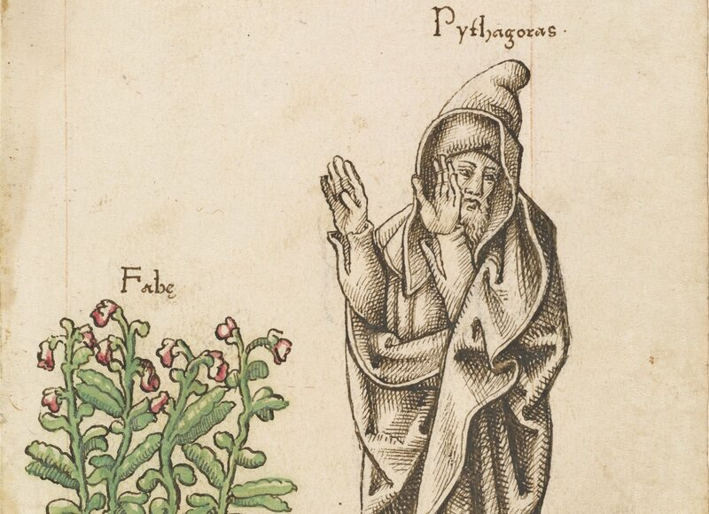 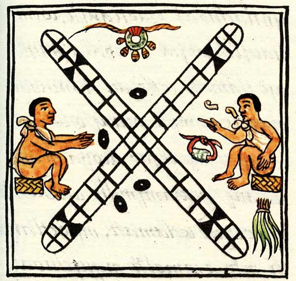 ] --- class: top, left, bg_trifolium 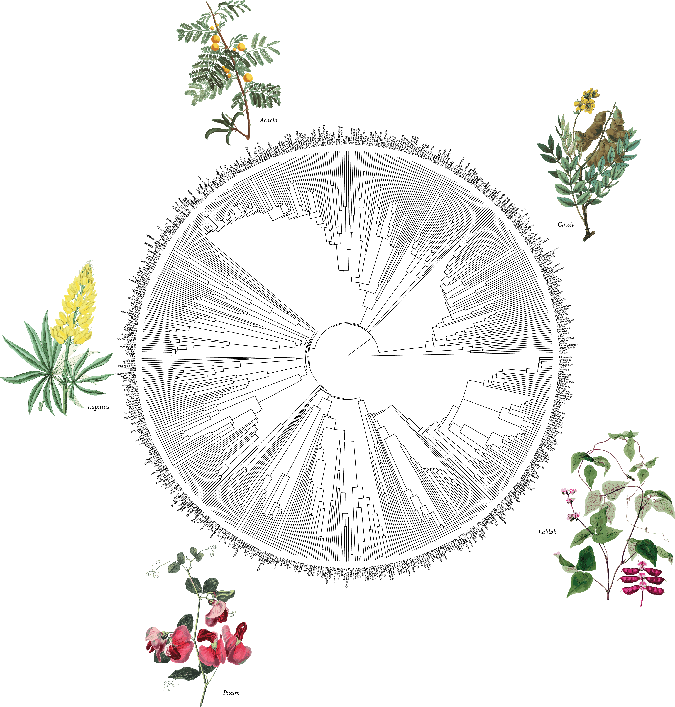 --- class: top, left, bg_trifolium <img src="css/images/figs/trees/fab-phylo-caes.png" width="61%"> --- class: top, left, bg_trifolium 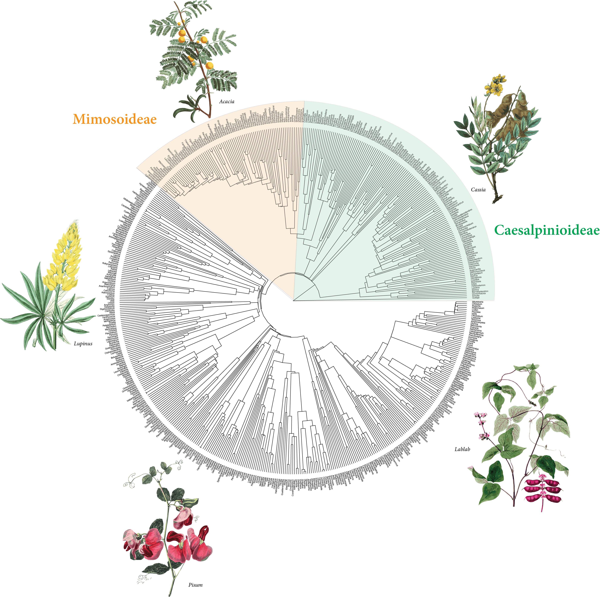 --- class: top, left, bg_trifolium <img src="css/images/figs/trees/fab-phylo-all.png" width="61%"> --- class: middle, right, bg_ceratonia <h2>“to create is to recombine”</h2> .footnote-left[Jacob, 1977] -- <br> <br> .larger[🌻 🌸 🌺 🌼 🌷] --- class: top, right, bg_tamarind -- <br> <br> <br> 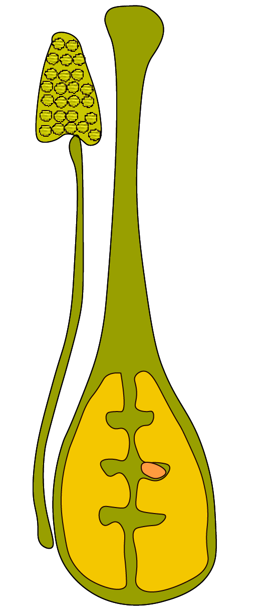 --- class: top, right, bg_tamarind <br> <br> 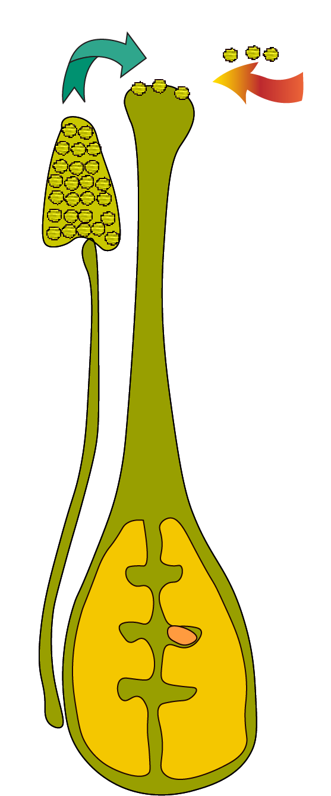 --- class: top, right, bg_tamarind <br> <br> 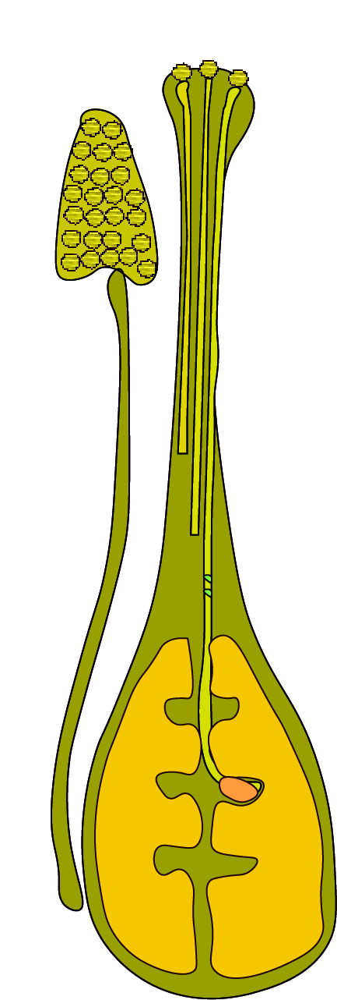 --- class: middle, center, bg_colutea <br> 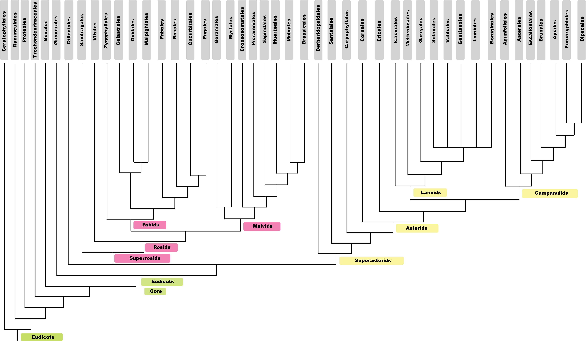 .footnote-right[ APG IV] --- class: middle, center, bg_colutea <br> <img src="css/images/figs/trees/tree-mechanism.png" width="95%"> .footnote-right[ APG IV] --- class: middle, center, bg_colutea <br> 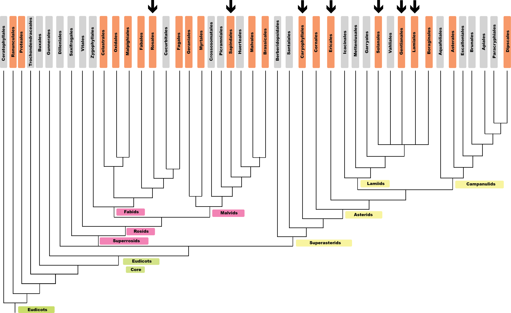 .footnote-right[ APG IV] --- class: middle, center, bg_colutea <br> 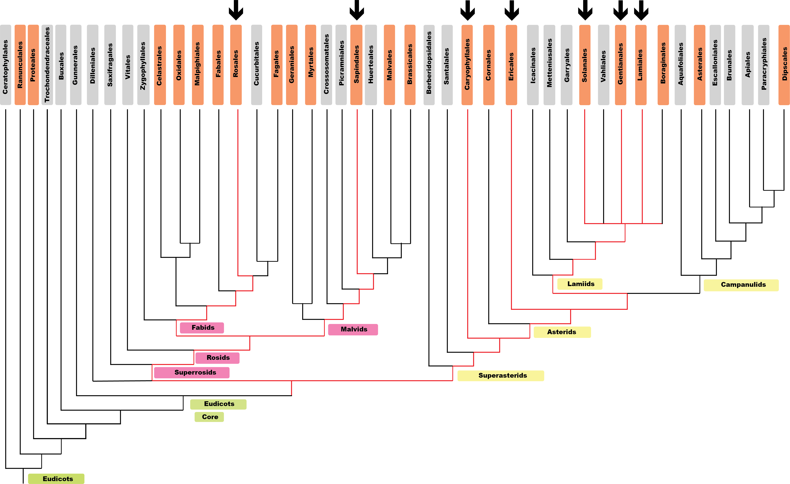 .footnote-right[ APG IV] --- class: middle, center, bg_colutea <br> 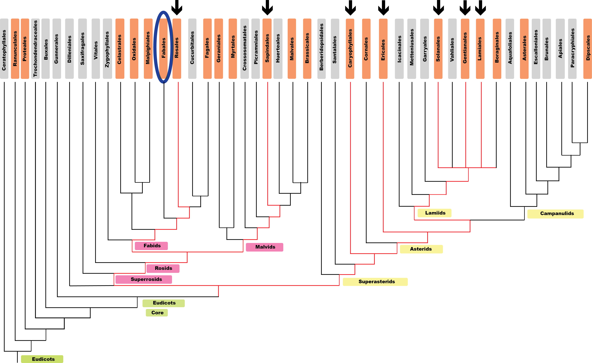 .footnote-right[ APG IV] --- class: top, right, bg_pea -- <br> <br> gametophytic <i class="far fa-check-circle fa-lg"></i> --- class: top, right, bg_pea <br> <br> gametophytic <i class="far fa-check-circle fa-lg"></i> wet styles <i class="far fa-check-circle fa-lg"></i> --- class: top, right, bg_pea <br> <br> gametophytic <i class="far fa-check-circle fa-lg"></i> wet styles <i class="far fa-check-circle fa-lg"></i> binucleate pollen <i class="far fa-check-circle fa-lg"></i> --- class: top, right, bg_pea <br> <br> gametophytic <i class="far fa-check-circle fa-lg"></i> wet styles <i class="far fa-check-circle fa-lg"></i> binucleate pollen <i class="far fa-check-circle fa-lg"></i> RSI in closely-related Rosaceae <i class="far fa-check-circle fa-lg"></i> --- class: top, left, bg_dolichos --- class: top, right, bg_mimosa2 --- class: top, left, bg_clitoria --- class: top, right, bg_locust --- class: top, left, bg_peanut --- class: top, right, bg_trifoliumprat --- class: top, right, bg_carob